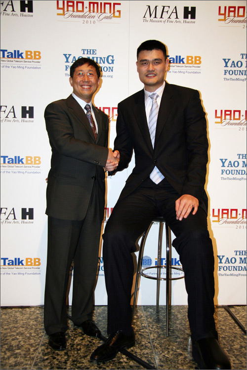

姚明有约：iTalkBB新电信岁末大抽奖!
(弗吉尼亚州维也纳市讯)
"共同成就，我们在一起"iTalkBB新电信携手姚明及其基金会新年大礼登场。想一睹姚明风采吗？想和这位篮球巨星共进晚餐吗？想参加别具一格的慈善宴会吗？
"姚明有约：iTalkBB岁末大抽奖"为广大iTalkBB用户及姚明粉丝提供独一无二的贺岁大奖：让您与篮球巨星姚明零距离面对面。抽中奖者不仅可以免费参与2010年1月30日在休斯敦艺术博物馆举行的iTalkBB冠名赞助姚明基金会慈善晚宴，还可以免费携带一名家属或朋友一同参与。
晚宴红毯，嘉宾流连，独具匠心，格调非凡。iTalkBB还特别为中奖者及其家人朋友提供15分钟时间，与姚明交流并合影留念。
如果您已经是iTalkBB的用户，或是在12月1日－12月31日新申请了iTalkBB的服务，您都可以通过iTalkBB"姚明有约"电子邮件从您的邮箱直接填写"申请"加入抽奖。或者登录iTalkBB网站，在线填写899号码申请加入抽奖。
如果您还不是iTalkBB的用户，也没有关系。作为姚明的忠实粉丝，同样有机会参与抽奖。登录www.iTalkBB.com，您可以在线填写三个简单问答。只要您答对问题，也同样可以参加抽奖。
岁末除旧尘，新年赢大礼！iTalkBB新电信携手姚明及其基金会，旨在为"海外华人提供更好的生活服务！" 基于双方共同的理念，而强强连手。
有关活动详情，欢迎拨打24小时中文免费服务热线1－877－482－5522，或登录网站www.iTalkBB.com。
关于The Yao Ming Foundation：
The Yao Ming Foundation成立于2008年6月，旨在帮助四川大地震中的受灾儿童，重建学校，协助教育等。著名NBA球星姚明注资成立的姚明基金会，将他们的工作重点放在中美儿童教育项目。基金会的运营成本全额由姚明出资，以确保基金会的筹款可以完全用于慈善儿童教育项目。
关于 iTalkBB：
iTalkBB新电信是享誉全美的优秀通讯品牌，是国际电讯行业的领导和先驱。其以顶级全球网络和前沿技术为依托，以最具竞争力的价格为客户提供高质、清晰的本 地、国内及国际长途电话服务，以及高清中文电视直播、回播与点播服务。其电话业务能完全取代传统家庭电话，并享受多重免费提供的附加功能如来电等待、三方通 话、来电显示、呼叫转移等。另有独一无二的功能——中国大陆、台湾、香港、南韩当地号码，当地亲友只要拨打此号码，就能接通到在美国的亲友，而无需支付国际 长途费用 。iTalkBB的高清中文电视服务，自问世以来便受到了广泛的好评和欢迎。超过五十个热门频道支持实时直播与48小时回看，海量最新电影电视剧综艺节目免 费无限点播，让用户以最低价格尽享华语娱乐。iTalkBB新电信将不断努力，与您共同成就更美好的生活。iTalkBB设有24小时中英文的客户服务热线: 1-877-482- 5522和官方网站www.iTalkBB.com，一年365天提供不间断的服务与更多信息的查询。